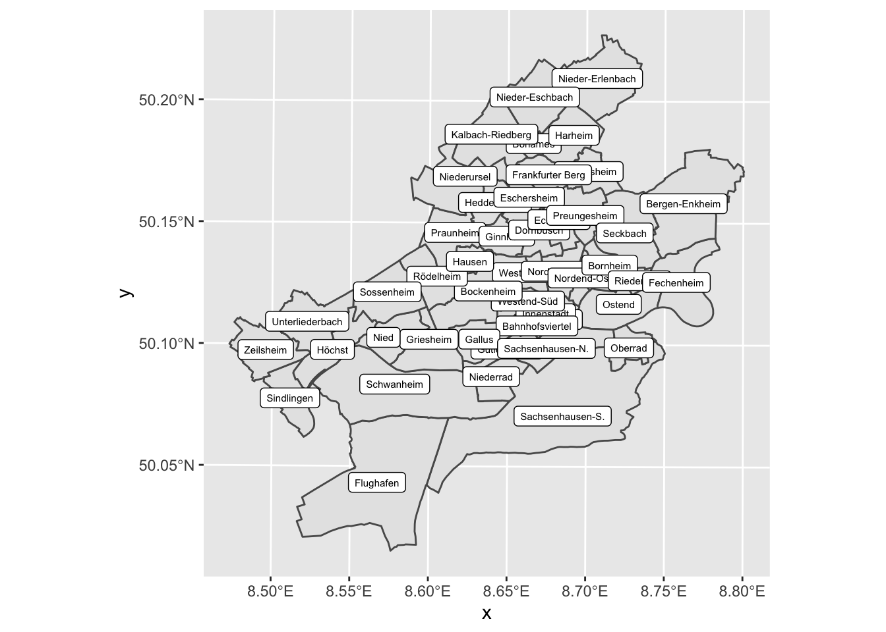
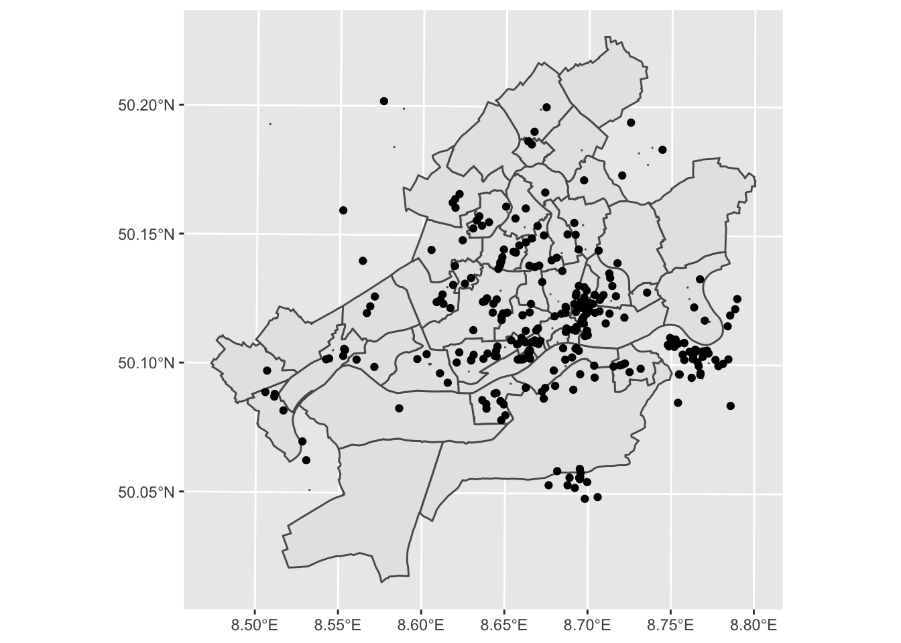
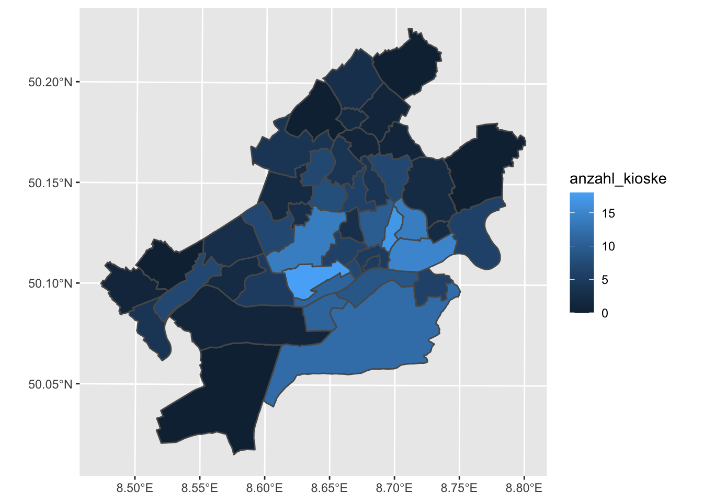
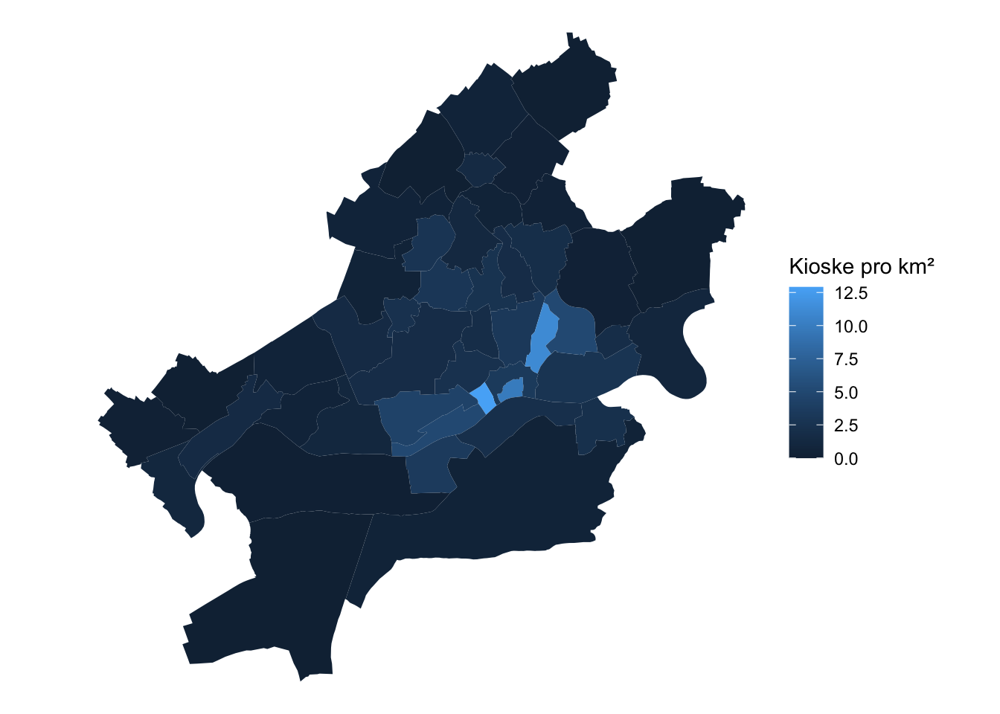

Sitzung 5 Geodaten verschneiden (FTR)
5.1 Lernziele
Sie können…
- Geodaten als Simple Features importieren,
- CRS bestimmen und umwandeln,
- einfache Verschneidungen von Simple Features durchführen und
- Simple Features kartographisch darstellen.
5.2 Vorbereitung
Für diese Lektion werden zwei Pakete geladen:
library(tidyverse)
library(sf)5.3 Ziel
Ziel ist, eine Choroplethenkarte von Frankfurt zu erstellen, die die Versorgung mit Kiosken darstellt.
5.4 Grundkarte
Eine Shapefile der Frankfurter Stadtteile findet sich hier: http://www.offenedaten.frankfurt.de/dataset/frankfurter-stadtteilgrenzen-fur-gis-systeme
Wir laden die Zip-Datei herunter und speichern den enthaltenen Ordner stadtteile in unserem Arbeitsverzeichnis. Es ist eine gute Angewohnheit, einen Unterordner für Ressourcen anzulegen.
Dann importieren wir den Geodatensatz als Simple Features (Paket sf):
stadtteile <- st_read("resources/stadtteile/Stadtteile_Frankfurt_am_Main.shp")
## Reading layer `Stadtteile_Frankfurt_am_Main' from data source
## `/Users/till/mzs/2021_methodenwoche/skript/resources/stadtteile/Stadtteile_Frankfurt_am_Main.shp'
## using driver `ESRI Shapefile'
## Simple feature collection with 46 features and 2 fields
## Geometry type: POLYGON
## Dimension: XY
## Bounding box: xmin: 462292.7 ymin: 5540412 xmax: 485744.8 ymax: 5563925
## Projected CRS: ETRS89 / UTM zone 32NSimple Features sind Datensätze, die eine Spalte geometry enthalten, in der Geodaten in einem standardisierten Format hinterlegt sind.
str(stadtteile)
## Classes 'sf' and 'data.frame': 46 obs. of 3 variables:
## $ STTLNR : num 1 2 3 4 5 6 7 8 9 10 ...
## $ STTLNAME: chr "Altstadt" "Innenstadt" "Bahnhofsviertel" "Westend-Süd" ...
## $ geometry:sfc_POLYGON of length 46; first list element: List of 1
## ..$ : num [1:46, 1:2] 476934 476890 476852 476813 476799 ...
## ..- attr(*, "class")= chr [1:3] "XY" "POLYGON" "sfg"
## - attr(*, "sf_column")= chr "geometry"
## - attr(*, "agr")= Factor w/ 3 levels "constant","aggregate",..: NA NA
## ..- attr(*, "names")= chr [1:2] "STTLNR" "STTLNAME"Eine Vorschau:
ggplot(stadtteile) +
geom_sf() +
geom_sf_label(aes(label = STTLNAME), size = 2)
5.5 OSM-Daten
Im OSM Wiki suchen wir den richtigen tag heraus. In diesem Fall shop=kiosk
Dann bauen wir auf Overpass Turbo die Abfrage und laden den Datensatz herunter.
Schließlich importieren wir:
kioske <- st_read("resources/kioske.geojson")
## Reading layer `kioske' from data source
## `/Users/till/mzs/2021_methodenwoche/skript/resources/kioske.geojson'
## using driver `GeoJSON'
## Simple feature collection with 325 features and 74 fields
## Geometry type: GEOMETRY
## Dimension: XY
## Bounding box: xmin: 8.505468 ymin: 50.04801 xmax: 8.789538 ymax: 50.20185
## Geodetic CRS: WGS 84Eine Vorschau:
ggplot() +
geom_sf(data = stadtteile) +
geom_sf(data = kioske)
5.6 Koordinatenreferenzsysteme
Der OSM-Datensatz ist mit WGS84 (EPSG 4326) referenziert:
st_crs(kioske)
## Coordinate Reference System:
## User input: WGS 84
## wkt:
## GEOGCRS["WGS 84",
## DATUM["World Geodetic System 1984",
## ELLIPSOID["WGS 84",6378137,298.257223563,
## LENGTHUNIT["metre",1]]],
## PRIMEM["Greenwich",0,
## ANGLEUNIT["degree",0.0174532925199433]],
## CS[ellipsoidal,2],
## AXIS["geodetic latitude (Lat)",north,
## ORDER[1],
## ANGLEUNIT["degree",0.0174532925199433]],
## AXIS["geodetic longitude (Lon)",east,
## ORDER[2],
## ANGLEUNIT["degree",0.0174532925199433]],
## ID["EPSG",4326]]Die Stadtteilen hingegen sind sind in ETSR89 (EPSG 25832):
st_crs(stadtteile)
## Coordinate Reference System:
## User input: ETRS89 / UTM zone 32N
## wkt:
## PROJCRS["ETRS89 / UTM zone 32N",
## BASEGEOGCRS["ETRS89",
## DATUM["European Terrestrial Reference System 1989",
## ELLIPSOID["GRS 1980",6378137,298.257222101,
## LENGTHUNIT["metre",1]]],
## PRIMEM["Greenwich",0,
## ANGLEUNIT["degree",0.0174532925199433]],
## ID["EPSG",4258]],
## CONVERSION["UTM zone 32N",
## METHOD["Transverse Mercator",
## ID["EPSG",9807]],
## PARAMETER["Latitude of natural origin",0,
## ANGLEUNIT["degree",0.0174532925199433],
## ID["EPSG",8801]],
## PARAMETER["Longitude of natural origin",9,
## ANGLEUNIT["degree",0.0174532925199433],
## ID["EPSG",8802]],
## PARAMETER["Scale factor at natural origin",0.9996,
## SCALEUNIT["unity",1],
## ID["EPSG",8805]],
## PARAMETER["False easting",500000,
## LENGTHUNIT["metre",1],
## ID["EPSG",8806]],
## PARAMETER["False northing",0,
## LENGTHUNIT["metre",1],
## ID["EPSG",8807]]],
## CS[Cartesian,2],
## AXIS["(E)",east,
## ORDER[1],
## LENGTHUNIT["metre",1]],
## AXIS["(N)",north,
## ORDER[2],
## LENGTHUNIT["metre",1]],
## USAGE[
## SCOPE["Engineering survey, topographic mapping."],
## AREA["Europe between 6°E and 12°E: Austria; Belgium; Denmark - onshore and offshore; Germany - onshore and offshore; Norway including - onshore and offshore; Spain - offshore."],
## BBOX[38.76,6,83.92,12]],
## ID["EPSG",25832]]Der Datensatz lässt sich allerdings transformieren:
stadtteile %>%
st_transform(4326) %>%
st_crs()
## Coordinate Reference System:
## User input: EPSG:4326
## wkt:
## GEOGCRS["WGS 84",
## DATUM["World Geodetic System 1984",
## ELLIPSOID["WGS 84",6378137,298.257223563,
## LENGTHUNIT["metre",1]]],
## PRIMEM["Greenwich",0,
## ANGLEUNIT["degree",0.0174532925199433]],
## CS[ellipsoidal,2],
## AXIS["geodetic latitude (Lat)",north,
## ORDER[1],
## ANGLEUNIT["degree",0.0174532925199433]],
## AXIS["geodetic longitude (Lon)",east,
## ORDER[2],
## ANGLEUNIT["degree",0.0174532925199433]],
## USAGE[
## SCOPE["Horizontal component of 3D system."],
## AREA["World."],
## BBOX[-90,-180,90,180]],
## ID["EPSG",4326]]Jetzt haben beide Datensätze den selben EPSG-Code. Das ist die Voraussetzung für den nächsten Schritt.
5.7 Verschneiden
Mit st_covers() und lengths() lassen sich die Anzahl der Kioske in jedem Stadtteil zählen und einer neuen Spalte im Originaldatensatz zuordnen:
stadtteile %>%
st_transform(4326) %>%
st_covers(kioske) %>%
lengths() -> stadtteile$anzahl_kioskeAuf einer Karte veranschaulicht:
ggplot(stadtteile) +
geom_sf(aes(fill = anzahl_kioske))
Allerdings wäre es schöner, die Kioskdichte (nach Fläche) darzustellen. Dazu berechnen wir zunächst die Flächen der Stadtteile:
st_area(stadtteile) %>%
as.numeric() / 1000 / 1000 ->
stadtteile$qkmOder mit Pipes:
stadtteile %>%
mutate(qkm = st_area(.) %>% as.numeric() / 1000 / 1000)
## Simple feature collection with 46 features and 4 fields
## Geometry type: POLYGON
## Dimension: XY
## Bounding box: xmin: 462292.7 ymin: 5540412 xmax: 485744.8 ymax: 5563925
## Projected CRS: ETRS89 / UTM zone 32N
## First 10 features:
## STTLNR STTLNAME geometry anzahl_kioske
## 1 1 Altstadt POLYGON ((476934.3 5550541,... 5
## 2 2 Innenstadt POLYGON ((477611.9 5552034,... 5
## 3 3 Bahnhofsviertel POLYGON ((475831 5550785, 4... 7
## 4 4 Westend-Süd POLYGON ((475745.4 5552373,... 6
## 5 5 Westend-Nord POLYGON ((476497.9 5553910,... 3
## 6 6 Nordend-West POLYGON ((478362.5 5553898,... 10
## 7 7 Nordend-Ost POLYGON ((478397.9 5551924,... 17
## 8 8 Ostend POLYGON ((481955.2 5552141,... 15
## 9 9 Bornheim POLYGON ((478959.8 5552336,... 14
## 10 10 Gutleutviertel POLYGON ((472942 5548802, 4... 11
## qkm
## 1 0.5065673
## 2 1.4902009
## 3 0.5425421
## 4 2.4948957
## 5 1.6307925
## 6 3.0977694
## 7 1.5305338
## 8 5.5573382
## 9 2.7840413
## 10 2.1982354Und dann die Kioskdichte:
stadtteile %>%
mutate(qkm = st_area(.) %>% as.numeric() / 1000 / 1000,
kioskdichte = anzahl_kioske / qkm)
## Simple feature collection with 46 features and 5 fields
## Geometry type: POLYGON
## Dimension: XY
## Bounding box: xmin: 462292.7 ymin: 5540412 xmax: 485744.8 ymax: 5563925
## Projected CRS: ETRS89 / UTM zone 32N
## First 10 features:
## STTLNR STTLNAME geometry anzahl_kioske
## 1 1 Altstadt POLYGON ((476934.3 5550541,... 5
## 2 2 Innenstadt POLYGON ((477611.9 5552034,... 5
## 3 3 Bahnhofsviertel POLYGON ((475831 5550785, 4... 7
## 4 4 Westend-Süd POLYGON ((475745.4 5552373,... 6
## 5 5 Westend-Nord POLYGON ((476497.9 5553910,... 3
## 6 6 Nordend-West POLYGON ((478362.5 5553898,... 10
## 7 7 Nordend-Ost POLYGON ((478397.9 5551924,... 17
## 8 8 Ostend POLYGON ((481955.2 5552141,... 15
## 9 9 Bornheim POLYGON ((478959.8 5552336,... 14
## 10 10 Gutleutviertel POLYGON ((472942 5548802, 4... 11
## qkm kioskdichte
## 1 0.5065673 9.870357
## 2 1.4902009 3.355252
## 3 0.5425421 12.902225
## 4 2.4948957 2.404910
## 5 1.6307925 1.839596
## 6 3.0977694 3.228129
## 7 1.5305338 11.107236
## 8 5.5573382 2.699134
## 9 2.7840413 5.028661
## 10 2.1982354 5.004014Schließlich die Karte:
stadtteile %>%
mutate(qkm = st_area(.) %>% as.numeric() / 1000 / 1000,
kioskdichte = anzahl_kioske / qkm) %>%
ggplot() +
geom_sf(aes(fill = kioskdichte), color=NA) +
scale_fill_continuous("Kioske pro km²") +
theme_void()